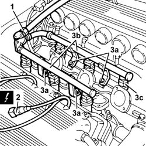
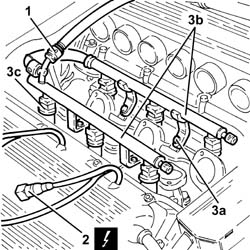

1056B62 l/h and r/h fuel pipe assembly - with injectors - r + r
- Path
- Procedures > 10 ENGINE > 1056 PETROL INJECTION SYSTEM > 1056B multi-point injection system (mpi) > 1056B62 l/h and r/h fuel pipe assembly - with injectors - r + r
- Kind
- repair procedure (removal / refitting; the operation number is the code)
- Applies to
- engines: 2.5 V6, 3.2 V6; all production periods
- Interactive page
- https://sloeber94.github.io/elrnDB-a156/en/#/3237538
Applies to: engines: 2.5 V6; all production periods
 Removing
Removing
 Refitting
Refitting- 1072B42 left hand or right hand inlet manifold (one) - r+r
1. Disconnect the fuel inlet hose, then plug to prevent fuel escaping.
2. Disconnect the electrical connections from the injectors.
 | Name | Connector |
|---|---|---|
2 | Injector |
3. Undo the bolts (3a) and remove the complete fuel pipe (3b) complete with fuel injectors (3c).

Applies to: engines: 2.5 V6; all production periods
Refitting
RemovingFit the fuel pipe, complete with fuel injectors, and tighten its bolts to the specified torque to secure.
 | Fastening | Component | Ø | Value (daNm) |
|---|---|---|---|---|
- | Bolt | FUEL PIPE ASSEMBLY | M6 | 0.6 - 0.8 |
Connect the electrical connections to the injectors.
Connect the fuel supply pipe.
- 1072B42 left hand or right hand inlet manifold (one) - r+r
Applies to: engines: 2.5 V6, 3.2 V6; all production periods; only with equipment: Euro 3
Removing
RefittingEnsure that the ignition key is in the OFF position, then disconnect the negative battery terminal.
| Name | Connector |
|---|---|---|
- | Battery |
Proceed with removal - 1072B42 left hand or right hand inlet manifold (one) - r+r .
Discharge the fuel supply pressure ( 10 ENGINE - WARNINGS).
1. Disconnect the rapid connector for the fuel supply pipe from the complete fuel pipe.
2. Disconnect the electrical connections from the injectors.
| Name | Connector |
|---|---|---|
2 | Injector |
3. Undo the bolts (3a) and remove the fuel pipe (3b) complete with injectors (3c).

Applies to: engines: 2.5 V6, 3.2 V6; all production periods; only with equipment: Euro 3
Refitting
RemovingPlace the fuel pipe, complete with injectors, back in its housing and fix it using the bolts.
Connect the electrical connections to the injectors.
Connect the rapid connector for the fuel supply pipe to the complete fuel pipe.
Proceed with refitting - 1072B42 left hand or right hand inlet manifold (one) - r+r .
Connect the negative (-) battery terminal.
Topics linked from this page (3)
Topics that link to this page (5)
- 1016D21 lh cylinder head - r r and replace gasket for versions with air conditioner
- 1016D25 rh cylinder head - r r and replace gasket for versions with air conditioner
- 1056B66 l/h fuel manifold pipe, with injectors - r + r
- 1056B67 r/h fuel manifold pipe, with injectors - r + r
- 1072B12 intake manifold (one) lh or rh - r r and replace gasket